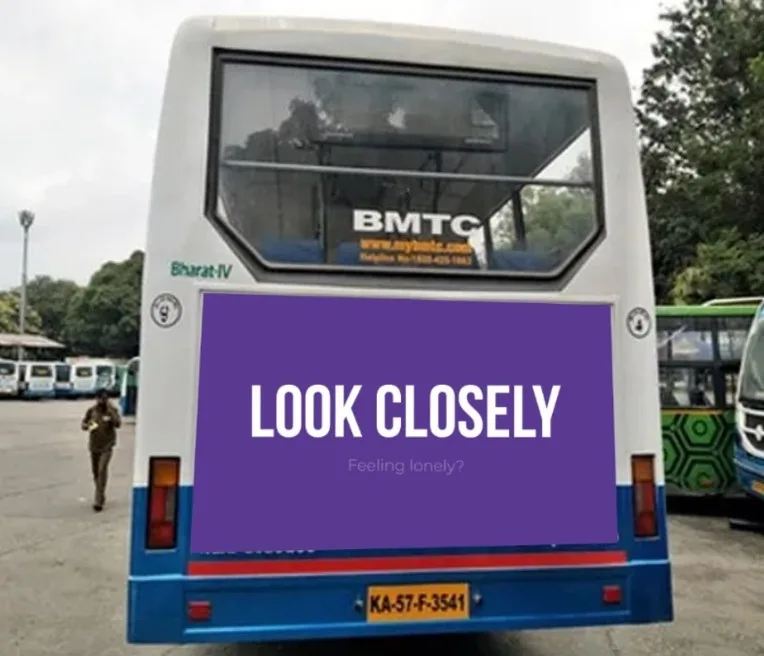
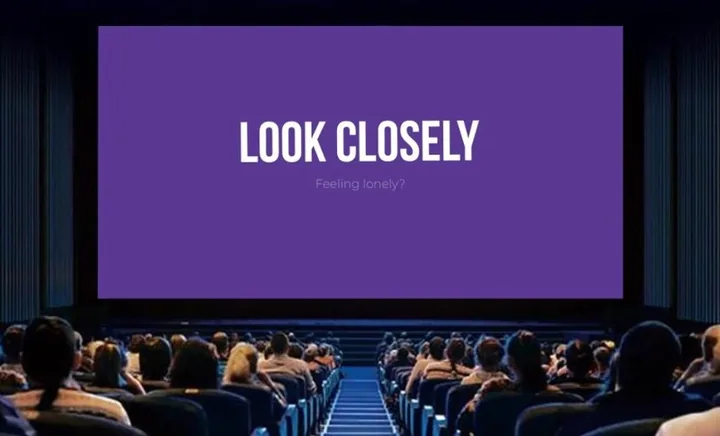
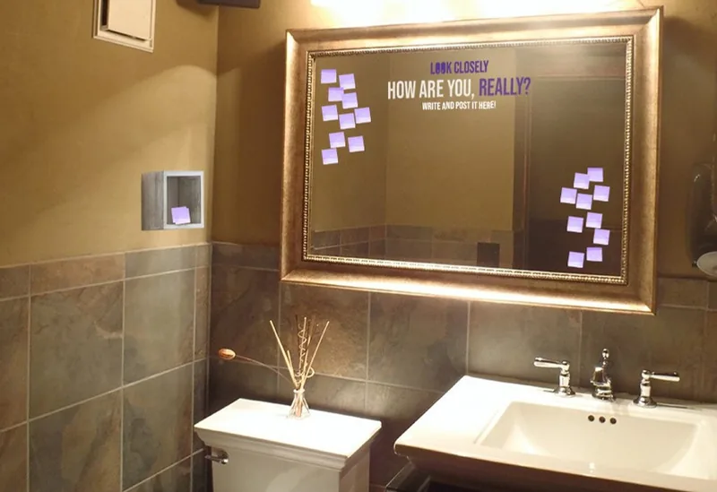
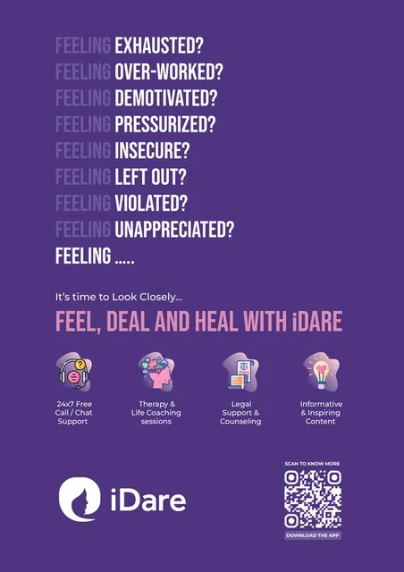
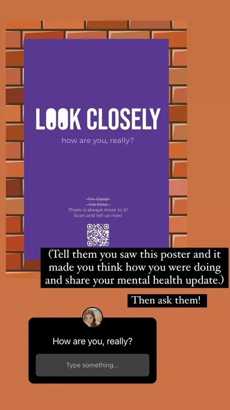

iDare · 2023Look
Closely
A three-phase Bengaluru campaign that put one question on posters, bus backs, cinema screens and bathroom mirrors: how are you, really?
Inkspell Award 2023, Best Digital Campaign in Healthcare

iDare had rebuilt its app, version 2.0, and wanted Bengaluru to know. The campaign was called Look Closely, and its whole ask was one question, asked plainly across the city: how are you, really? The earlier work had been about breaking taboos. This one had to make people look at themselves, then open an app that offers therapy, legal counselling and free 24x7 chat.
The plan ran in three phases, an anonymous teaser, an interaction phase carried by creators, and a reveal that named iDare. My work sat across strategy, copy and the influencer kit: the poster lines, the mirror decals, the scripts, and the tone brief that kept every partner sounding like a person rather than a brand.
Put one honest question
to the whole of Bengaluru.
We kept the question in front, not the brand. Purple posters went up on walls, bus backs carried 'Look closely, feeling lonely?', cinema screens held the same frame, and stickers appeared on bathroom mirrors with space to write and post back. The posters struck out 'I'm good' and 'I'm fine' and replaced them with one line: there is always more to it. Every surface pointed to the same action, scan and say how you actually are.
- Three-phase structure: an anonymous teaser from 24 November, an interaction phase through creator partners, and a reveal that named iDare.
- Influencer kit: pre-buzz reel scripts, one-to-two-slide story scripts, tag-story prompts and reshare stories, each ending on a Q&A sticker or the app link.
- Out-of-home: purple posters and banners, BMTC bus backs, mirror decals with sticky notes, and a cinema-screen cut.
- A vox-pop film shot across the city, cut into a cinema ad that ran through the launch.
- Launch-phase workshops and events, with a PR agency and creators carrying the reveal into their own feeds.
- Reveal copy and sample scripts, plus the landing-page CTA into the new app.





Awarded at the Inkspell Awards / Drivers of Digital Awards & Summit 2023.
Client: iDare. Campaign creatives reproduced with permission.